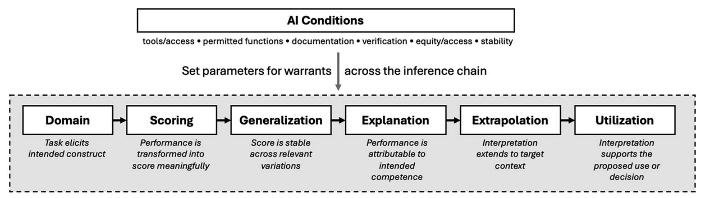

Which inference is at risk? Generative AI and the meaning of assessment evidence
When students can use generative AI, a strong essay no longer means what it used to. Most of the debate treats this as a cheating problem. I argue that it is a validity problem, and in fact several different ones that call for different responses.
One discrepancy with several possible explanations
Take a familiar case. A student submits an excellent take-home essay in a course where AI use is permitted or hard to prevent, and then performs poorly in an oral follow-up on the same ideas. The obvious reading is that the essay was compromised. But the discrepancy could mean quite different things:
- AI made it possible to complete the essay without doing the intended reasoning.
- The essay score partly reflects tool access, prompting experience or the marker’s reaction to AI use.
- The product is strong, but the student cannot explain or defend its ideas.
- The essay and the oral exam simply elicit different capabilities under different conditions.
- Both provide relevant evidence, and it is unclear how to weigh them for a decision.
Each of these points to a different kind of redesign. Detection tools cannot tell them apart.

Locating the problem in the validity argument
The paper uses Kane’s argument-based approach to validity, in which a chain of inferences links an observed performance to a score, to an interpretation, and finally to a decision. Generative AI enters this chain by changing the conditions under which students produce their work: which tools they can access, what the tools may be used for, what has to be disclosed and how stable the tools are. Within that frame, I separate five problems that are often collapsed:
- AI use is not the same as construct mismatch. If the course aims at AI-supported professional judgement, AI use can be part of the capability. If it aims at unaided reasoning or writing, the same use bypasses what is being assessed.
- A task can target the right capability while scores reflect the wrong variance. Better models, more prompting experience, or a marker’s reaction to suspected AI use can all shift grades without reflecting the intended competence.
- Authorship is not the same as ownership of meaning. The more useful question is not who produced the words but whether the student can account for the submitted work, for example by justifying a recommendation or explaining how the evidence supports it.
- Evidence under one set of conditions may not support claims under another. AI-supported coursework can say little about independent competence, and an AI-free exam can underrepresent what professional practice now requires.
- A defensible interpretation does not justify every use. Even a well-supported score may not be enough for progression or certification without a rationale for thresholds and for how evidence is combined.
The consequences of an assessment regime, including the incentives it creates and how burdens are distributed, run across all of these.
A sequence for redesign
For course and program teams, the paper proposes five steps: specify the claim a high score is meant to support; specify the AI conditions under which that claim should hold; locate the inference that a concern most directly threatens; choose a design response, while checking what it changes elsewhere in the chain; and decide what local evidence is enough for the stakes. A compact Validity Reasoning Matrix links typical concerns to the inference under pressure, the design question and the evidence that would help.
Every redesign moves pressure around. Oral defences may improve attribution but reduce reliability or accessibility. Authentic tasks may improve extrapolation but make scoring harder, and they do not remove integrity concerns by default. Low-stakes formative tasks need little more than clear conditions; high-stakes decisions need stronger, combined evidence.
What it means
Generative AI exposes something that was true all along: validity depends on explicit claims, explicit conditions and defensible warrants. Instead of trying to make tasks “AI-proof”, institutions can ask what their assessments are supposed to show, and under which conditions that still holds. The framework is conceptual, so whether teams can use the matrix consistently, and whether it leads to better redesign decisions, remains an empirical question.
Weidlich, J. (2026). Which inference is at risk? Assessment validity reasoning and generative AI. Assessment & Evaluation in Higher Education. https://doi.org/10.1080/02602938.2026.2734795